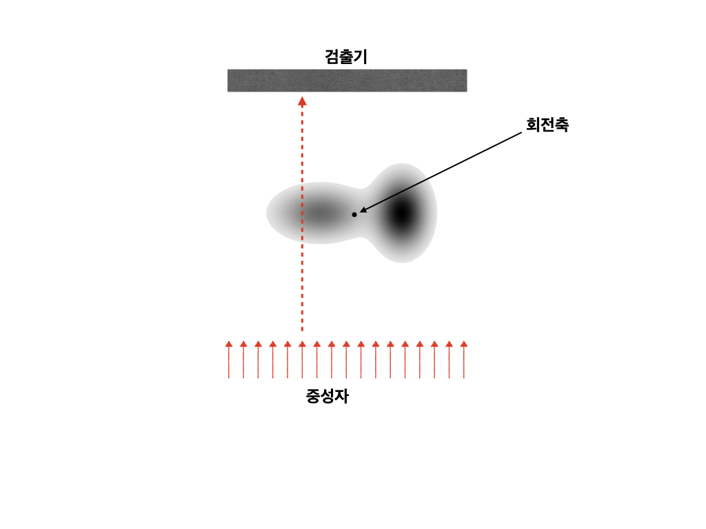
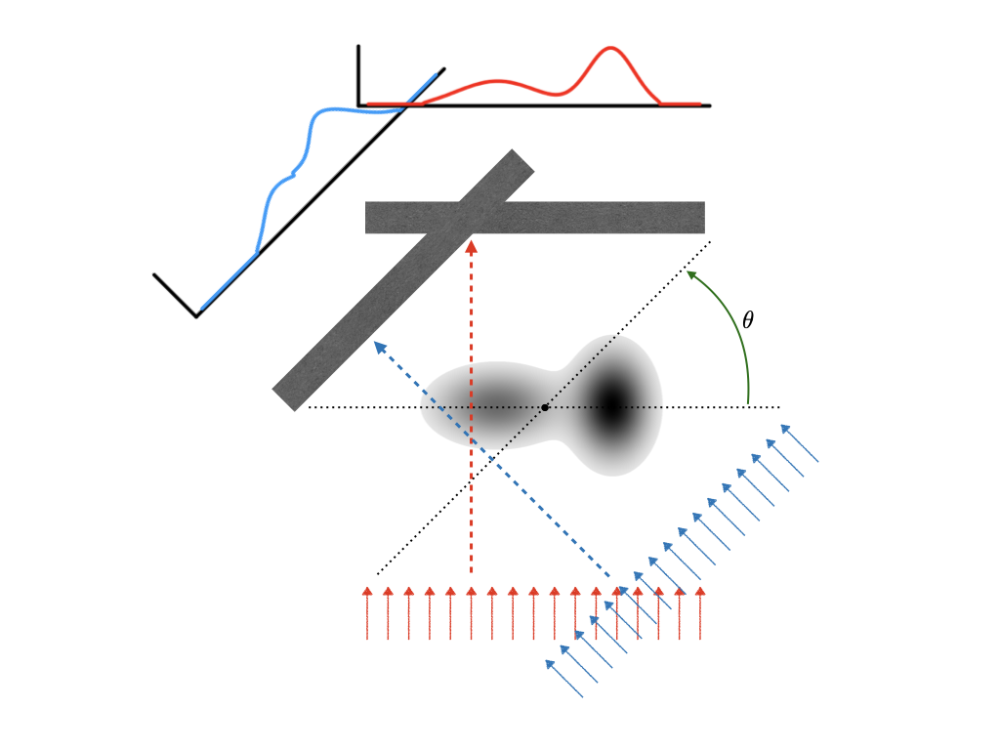

II. 토모그래피
토모그래피의 기본적인 개념은 아래 그림과 같다. 중성자나 X 선과 같이 물질을 투과하는 성질이 강한 입자를 물질에 쐬어 주면 대부분의 입자가 물질을 투과하여 검출기에 검출된다. 하지만 모든 입자가 투과하지는 못하며 물질의 성질에 따라 일부 입자가 산란되거나 흡수되며 검출기에서는 산란되거나 흡수되지 않고 투과되는 빔의 강도를 검출기 위치별로 측정한다. 검출기는 1차원일수도 있고 2차원 일 수도 있다.

장비에 따라 (1) 검출기와 선원이 고정된 상태에서 측정 대상이 회전중심을 기준으로 회전할 수도 있고, (2) 측정 대상이 고정된 상태에서 검출기와 선원(radiation source) 이 회전할 수도 있다. 우리는 앞서 라돈 변환을 설명할 때 (1) 의 경우에 대대 설명했지만, 수학적인 설명은 (2) 의 경우를 기준으로 설명하겠다. (이 분야의 대표적인 교과서들이 (2) 를 기준으로 설명하였으므로…) 물리적으로는 (1) 과 (2) 는 서로 회전 방향이 반대라는 것 밖에 차이가 없다. 즉 (1) 의 경우 시계방향으로 \(\theta\) 만큼의 회전은 (2) 의 경우에서 반시계방향으로 \(\theta\) 만큼의 회전과 완전히 동일하다.
물질의 위치에 따른 선형 감쇄 계수가 \(\mu (x,\,y)\) 로 주어졌다고 하자. 감쇄 계수는 \(I_0\) 의 강도로 입사된 빔이 \(ds\) 만큼의 경로를 진행했을 때 감소되는 빔의 강도이다. 즉,
\[ \mu = -\dfrac{1}{I}\dfrac{dI}{ds} \]
이다. 선원에서 \(I_0\) 의 빔의 강도를 가진 빔이 \(S\) 의 경로를 따라 갔을 때의 빔의 강도는
\[ I = I_0 \exp \left[-\int_S \mu (x, y)\, ds\right] \tag{1} \]
가 된다. 중성자나 X-선의 경우 공기중의 선형 감쇠 계수는 매우 작기 때문에 우리가 관심이 있는 영역에서의 경로적분만을 생각하면 된다. 또한 빔이 \(x\) 값이 고정된 직선 경로를 따른다면,
\[ I(x) = I_0 \exp \left[-\int_{y_i}^{y_f} \mu (x, y)\, dy\right] \tag{2} \]
이다. 만약 물질이 없는 경로에서의 측정값이 있다면 \(I(x) = I_0\) 가 될 것이다.
우리가 검출기에서 측정한 값이 \(\overline{I}(x)\) 이며 물질이 없는 경로에서의 측정값 \(\overline{I_0}\) 을 가지고 있다면,
\[ -\ln \left(\dfrac{\overline{I}(x)}{\overline{I_0}}\right) = \int_{y_i}^{y_f} \mu (x, y)\, dy \tag{3} \]
가 될 것이다.
Projection
토모그래피에 있어 물질은 \(\mu (x, y)\) 를 의미한다. \(\mu\) 는 선원, 물질의 종류 및 밀도에 따라 달라지는 값이며, 토모그래피는 projection들 을 모아 \(\mu(x, y)\) (3차원 토모그래피의 경우는 \(\mu(x, y, z)\)) 를 재구성(reconstruction) 하는 방법이다.
이제 선원과 검출기를 반시계방향을 \(\theta\) 만큼 돌려서 찍었다고 하자.

우리가 \(\theta\) 만큼 회전하여 얻은 데이터를 \(I_\theta (x)\) 라고 하자. 이것은 앞서 라돈 변환에서의 projection \(p_\theta(x)\) 와 같다.
이제 라돈 변환을 잠시 다른 모양의 동등산 식으로 바꿔 보자.
\[ p_\theta(t) = \int_{-\infty}^{\infty} \mu(x,\,y)\, \delta (x\cos \theta + y \sin \theta -t )\, dx\,dy \tag{4} \]
Fourier Slice Theorem
푸리에 변환과 역변환
이차원 함수 \(f(x, y)\) 을 2차원 푸리에변환 한 함수 \(\mathfrak{F}[f](u, v) = F(u, v)\) 는 다음과 같다.
\[ F(u, v) = \mathfrak{F}[f](u, v) = \iint f(x, y) \, e^{-2\pi i ( ux+yv)}\, dx\, dy \]
우리는 \(F(u, v)\) 에 대한 푸리에 역변환으로부터 \(f(x, y) = \mathfrak{F}^{-1}[F](x, y)\) 를 얻을 수 있다는 것을 알고 있다. 즉,
\[ f(x, y) = \mathfrak{F}^{-1}[F](x, y) = \iint F(u, v) \, e^{2\pi i (ux +yv)}\, du\, dv \]
임을 안다. 즉 \(f(x, y)\) 를 안다는 것과 \(F(u, v)\) 를 안다는 것은 정확히 같은 것이다.
Projection 과 푸리에변환
Projection \(p_\theta (s)\) 에 대한 1차원 푸리에 변환을 \(S_\theta(\omega)\) 라 하면,
\[ S_\theta(\rho) = \int p_\theta(t) \,e^{-2\pi i\rho t}\, dt\, \tag{5} \]
이다.
아래의 그림처럼 \(\theta\) 만큼 회전시킨 \(t-s\) 좌표계를 생각하자. 그렇다면, \((x, y)\) 와 \((t, x)\) 의 관계는 아래와 같다.
\[ \begin{bmatrix} t \\ s \end{bmatrix} = \begin{bmatrix} \cos \theta & \sin \theta \\ - \sin \theta & \cos \theta\end{bmatrix} \begin{bmatrix} x \\ y \end{bmatrix} \]
라돈 변환을 생각하면,
\[ p_\theta (t) = \int f(t, s)\, ds \]
이며 식 (\(5\)) 로 부터
\[ \begin{aligned} S_\theta (\rho) &= \int p_\theta (t) e^{-2\pi i \rho t}\, dt \\ &=\int \left[\int f(t, s) \, ds\right] \, e^{-2\pi i \rho t}\, dt \\ &= \iint f(x, y) e^{-2 \pi i \rho ( x \cos\theta + y\sin \theta) } \, dx\, dy \end{aligned} \tag{6} \]
임을 안다. 여기서 \(u = \rho \cos \theta,\, v = \rho \sin \theta\) 라고 하면,
\[ S_\theta (\rho) = \iint f(x, y) e^{-2\pi i (ux + vy)}\, dx\, dy = \mathfrak{F}[f](u, v) = F(\rho \cos \theta, \rho \sin \theta) \tag{7} \]
이다. 이것이 바로 Fourier Slice Theorem 이다. Fourier slice theorem 은 sinogram 으로부터 \(f(x, y)\) 를 구할 수 있음을, 즉 역 라돈 변환이 가능함을 보장한다.

Filtered back projeciton
정리
\(f(x, y)\) 가 함수라고 하자. 그렇다면 우리는 임의의 projeciton \(p_\theta(t)\) 를 얻을 수 있으며, 이를 통해 \(\mathfrak{F}[f](u, v)\) 를 구할 수 있다.
우리가 토모그래피를 통해 측정하는 것은 \(\theta = \theta_1,\, \theta_2,\,\theta_3, \ldots\) 에 대한 \(p_\theta (t)\) 이다. 그리고 푸리에 변환을 통해 \(S_\theta (\omega)\) 를 얻을 수 있다.
\(S_\theta (\omega) = F(\omega \cos\theta, \omega \sin \theta)\) 와 같다.
Filtered projection
\[ \begin{aligned} f(x, y) &= \iint F(u, v) e^{2\pi i (ux + yv)}\, du\, dv \\ &= \int_0^{2\pi}\int_0^{\infty} F(\rho \cos \theta, \rho \sin \theta)\, e^{2\pi i (\rho x \cos \theta + \rho y \sin \theta)} \, \rho\, d\rho \, d\theta \end{aligned} \]
이며 \(\theta\) 에 대한 적분을 \([0, \pi)\), \([\pi, 2\pi)\) 구간으로 나누어 생각해 보자.
Projection \(p_\theta (t)\) 를 생각해보자. \(\theta + \pi\) 만큼 회전시킨 projection 은 \(\theta\) 에 대한 projection 과 같은 선상의 적분이며 단지 \(t\) 값이 \(-t\) 로 바뀔 뿐이다. 따라서 \(p_{\theta + \pi} (t) = p_\theta(-t)\) 이다.
식 (\(6\)) 으로부터, \(S_{\theta + \pi}(\rho) = S_\theta (-\rho)\) 임을 안다. 따라서 다음이 성립한다. \[ F(\rho \cos (\theta + \pi), \rho \sin (\theta + \pi)) = F(-\rho \cos \theta, -\rho \sin\theta) \tag{8} \]
그렇다면, \([\pi, 2\pi)\) 구간에서 \(\phi = \theta - \pi\) 로 놓으면, 그리고 중간에 \(\rho \to -\rho\) 변환을 사용하면,
\[ \begin{aligned} \int_\pi^{2\pi}\int_0^\infty &F(\rho \cos \theta, \rho \sin \theta)\, e^{2\pi i (\rho x \cos \theta + \rho y \sin \theta)} \, \rho\, d\rho \, d\theta\\ &=\int_0^\pi \int_0^\infty F(-\rho\cos \phi, -\rho \sin \phi) e^{-2\pi i(\rho x \cos \phi +\rho y \sin\phi)} \, \rho\, d\rho \, d\phi \\ & = \int_0^\pi \int_{-\infty}^0 F(\rho \cos \phi, \rho \sin \phi) e^{2\pi i (\rho x \cos \theta + \rho y \sin \theta)} (-\rho)\, d\rho \,d\phi \end{aligned}\tag{9} \]
이다. 식 (\(7\)) 과 (\(9\)) 로부터, 그리고 Fourier slice theorem 으로부터,
\[ \begin{aligned} f(x, y) &=\int_0^{ \pi} \int_{-\infty}^\infty F(\rho \cos\theta, \rho \sin \theta) e^{2\pi i \rho(x \cos \theta + y \sin \theta)}|\rho| \, d\rho \, d\theta \\ &= \int_0^\pi \left[ \int_{0}^\infty S_\theta (\rho) |\rho| e^{2\pi i \rho (x\cos \theta + y \sin \theta)}\, d\rho \right] \, d\theta \end{aligned} \]
를 얻는다. 우리는 \(t=x \cos \theta + y \sin \theta\) 가 \(\theta\) 만큼 회전시켰을때의 projection 의 독립변수임을(혹은 좌표값임을) 알고 있다. 따라서
\[ Q_\theta (t) = \int_{0}^\infty S_\theta(\rho) |\rho| e^{2\pi i \rho t} \, d\rho \]
라고 정의하면,
\[ f(x, y) = \int_0 ^\pi Q_\theta (t = x \cos \theta + y \sin \theta) \,d\theta \]
가 된다. 이 때의 \(Q_\theta (t)\) 를 filtered projection 이라고 하며 filtered projection 을 통해 \(f(x, y)\) 를 얻는 과정을 filtered back projection 이라고 한다. 즉 filtered back projection 은 다음의 과정을 통해 원본 이미지를 reconstructin 한다.
\[ p_\theta (t) \longrightarrow S_\theta (\rho) \longrightarrow Q_\theta(t) \longrightarrow f(x, y) \]